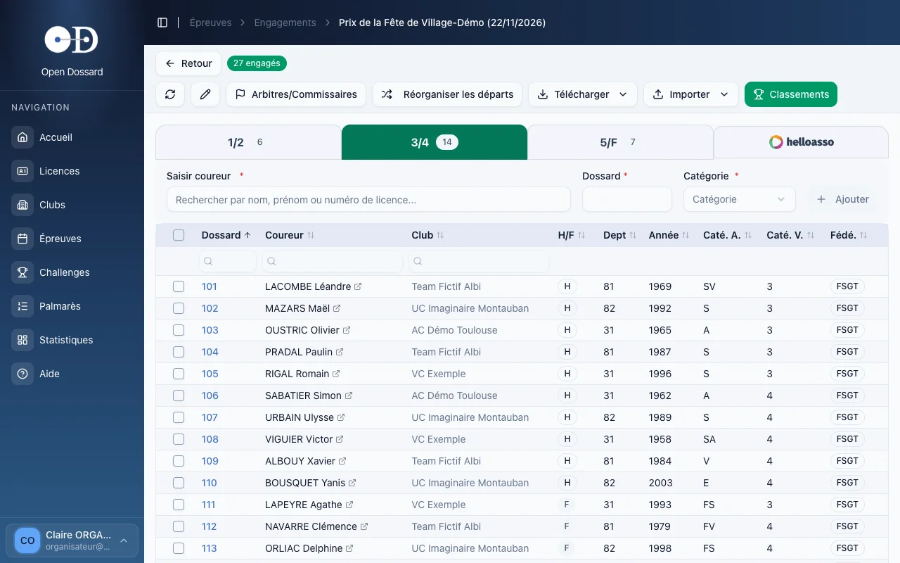
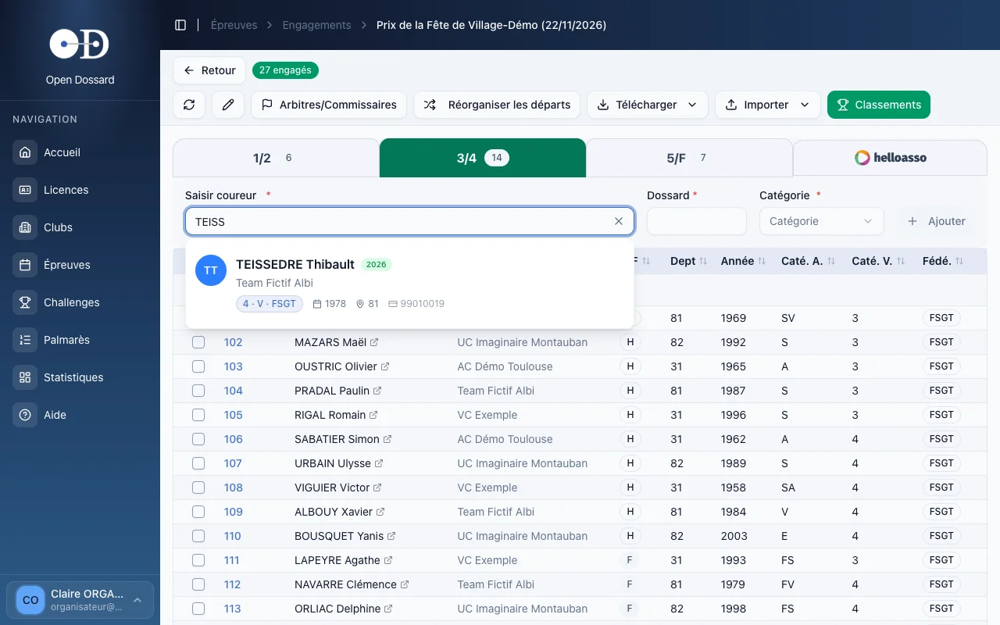
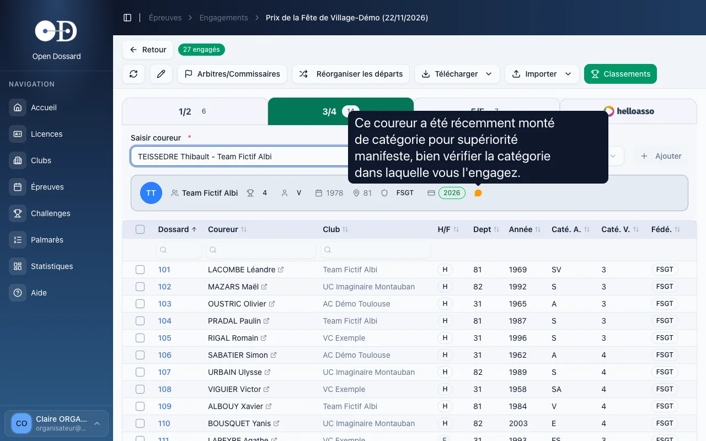
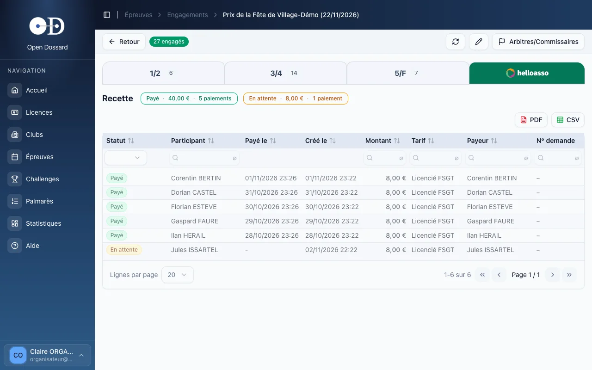
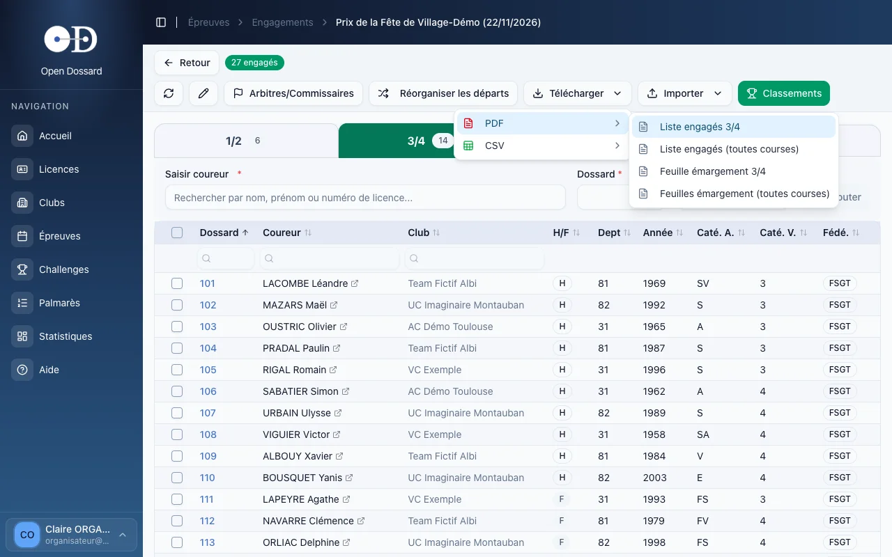
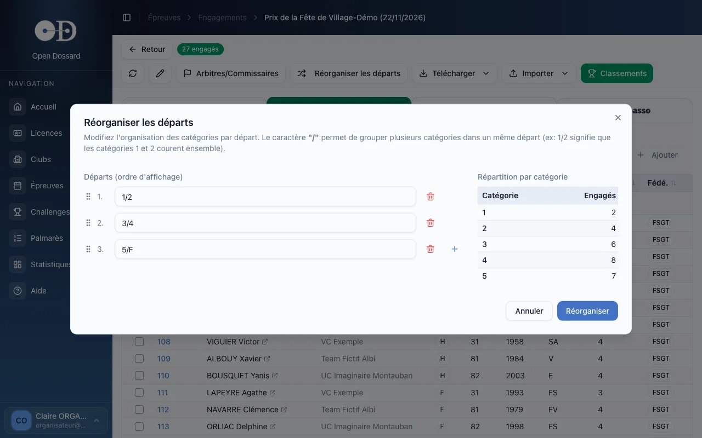

- • Un onglet par départ : choisissez la course, cherchez le coureur, saisissez son dossard, ajoutez.
- • Les coureurs qui ont payé en ligne apparaissent dans l'onglet HelloAsso ; engagez-les le jour J pour leur donner un dossard.
- • Listes d'engagés et feuilles d'émargement se téléchargent en PDF ou en CSV : rafraîchissez l'écran avant d'imprimer si vous êtes plusieurs à engager.
Ouvrir les engagements
Depuis la liste des épreuves, cliquez sur le nombre d'engagés (« 27 Eng. ») de la ligne, ou sur le bouton Engagements de la fiche épreuve. L'écran affiche un onglet par départ, avec le nombre d'engagés de chacun.

La liste se trie en cliquant sur l'en-tête des colonnes et se filtre avec les champs placés dessous. Le nom de chaque coureur ouvre sa fiche licence dans un nouvel onglet.
Engager un coureur
- Cliquez sur l'onglet du départ concerné.
- Dans Saisir coureur, tapez le début du nom, du prénom ou le numéro de licence, puis choisissez le coureur dans la liste proposée.
- Saisissez son numéro de dossard. La catégorie est reprise de sa licence : modifiez-la si besoin.
- Cliquez sur Ajouter. Le coureur apparaît dans la liste et le compteur de l'onglet augmente.

Créez d'abord sa fiche dans Licences, puis revenez l'engager. Pour un coureur sans licence, l'épreuve doit être ouverte aux non licenciés.
Contrôles automatiques
- « Déjà pris » : le dossard est déjà attribué sur ce départ. Chaque dossard est unique par départ.
- « Ce licencié est déjà engagé sur cette course » : un coureur ne peut être engagé qu'une fois par départ.
- Autre fédération : un avertissement vous invite à vérifier que le coureur n'a pas aussi une licence dans la fédération de l'épreuve.
- Licence pas à jour : si sa saison n'est pas celle en cours, un lien Mettre à jour la licence ouvre sa fiche.
Commentaire sur la licence
Une fiche licence peut porter un commentaire laissé par un organisateur : coureur récemment monté de catégorie, certificat médical à présenter, changement de club… Après avoir choisi le coureur, une ligne récapitule sa licence. Si elle contient un commentaire, une bulle orange apparaît au bout de cette ligne.

Placez le pointeur sur la bulle orange (ou touchez-la sur tablette) : le commentaire s'affiche en grand. Prenez-en connaissance avant de cliquer sur Ajouter, il peut conditionner l'engagement du coureur.
Désengager
Cochez un ou plusieurs coureurs, puis cliquez sur Désengager. Un coureur déjà classé, ou marqué abandon, ne peut pas être désengagé : sa case n'est pas proposée.
Pré-inscriptions payées en ligne
Si le paiement en ligne est activé, les coureurs se pré-inscrivent et paient depuis l'application Dossardeur. Dès le premier paiement, un onglet HelloAsso apparaît à droite des départs.

- la recette totalise les montants payés et en attente ;
- chaque ligne indique le statut (Payé, En attente…), le participant, le payeur, le tarif et le montant ;
- les boutons PDF et CSV exportent ce tableau pour la comptabilité du club.
Une pré-inscription payée n'attribue pas de dossard. Lorsque le coureur se présente, engagez-le comme les autres sur son départ : son numéro de dossard apparaît alors dans la colonne Dossard de l'onglet HelloAsso, et vous savez d'un coup d'œil qui reste à accueillir.
Plusieurs personnes aux engagements
Le jour de la course, plusieurs bénévoles engagent souvent en même temps, chacun sur son ordinateur ou sa tablette. Chaque écran n'affiche que ce qu'il a chargé : les engagements saisis sur un autre poste n'y apparaissent qu'après un rafraîchissement.
- cliquez régulièrement sur le bouton de rafraîchissement, à gauche de la barre d'outils : il recharge les engagés et les paiements en ligne sans quitter l'écran ;
- rafraîchissez toujours avant d'imprimer une liste ou une feuille d'émargement, pour qu'elle contienne la totalité des engagés.
Imprimer et exporter
Le menu Télécharger propose, pour le départ affiché ou pour tous les départs :
- la liste des engagés en PDF ;
- les feuilles d'émargement en PDF, à faire signer au retrait des dossards ;
- la liste des engagés en CSV, pour un tableur.
Les PDF reprennent les engagés affichés à l'écran. Si d'autres personnes engagent en même temps que vous, cliquez d'abord sur le bouton de rafraîchissement : sinon, les derniers engagés manqueront sur la liste ou la feuille d'émargement.

Importer une liste d'engagés
Le menu Importer → Engagés charge un fichier CSV (séparateur point-virgule, en-tête sur la première ligne) avec les colonnes :
Dossard;Nom;Club;Sexe;Dept;Année;CatéA;CatéV;Licence;Fédé;Course
C'est exactement le format produit par Télécharger → CSV : le plus simple est de partir d'un export. Chaque ligne doit correspondre à une licence existante ; les lignes en erreur sont listées dans le rapport affiché à la fin de l'import (licences inconnues, coureurs en double, données incohérentes).
Réorganiser les départs
Le jour de la course, les effectifs réels peuvent pousser à regrouper ou séparer des catégories. Cliquez sur Réorganiser les départs :

- modifiez le contenu de chaque départ : la barre oblique groupe des catégories (« 1/2/3 » fait courir les catégories 1, 2 et 3 ensemble) ;
- ajoutez un départ avec +, supprimez-en un avec la corbeille, changez l'ordre par glisser-déposer ;
- cliquez sur Réorganiser : les coureurs sont répartis selon leur catégorie.
La réorganisation devient impossible dès qu'un classement a été saisi, ou si un même dossard est attribué sur plusieurs départs. Faites-la avant le premier départ.
Arbitres et commissaires
Le bouton Arbitres/Commissaires enregistre les officiels de l'épreuve, repris sur les classements et la fiche épreuve. Voir Arbitres & commissaires.